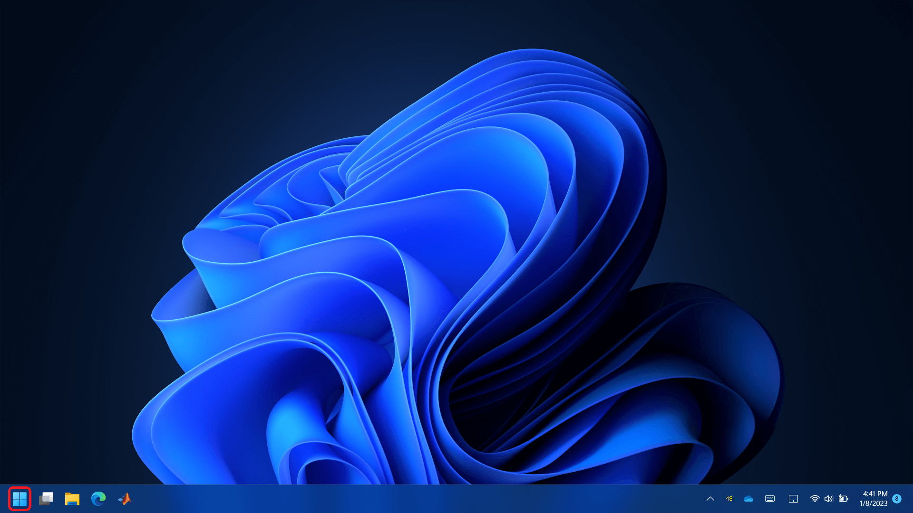
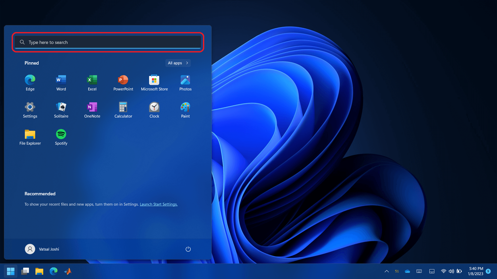
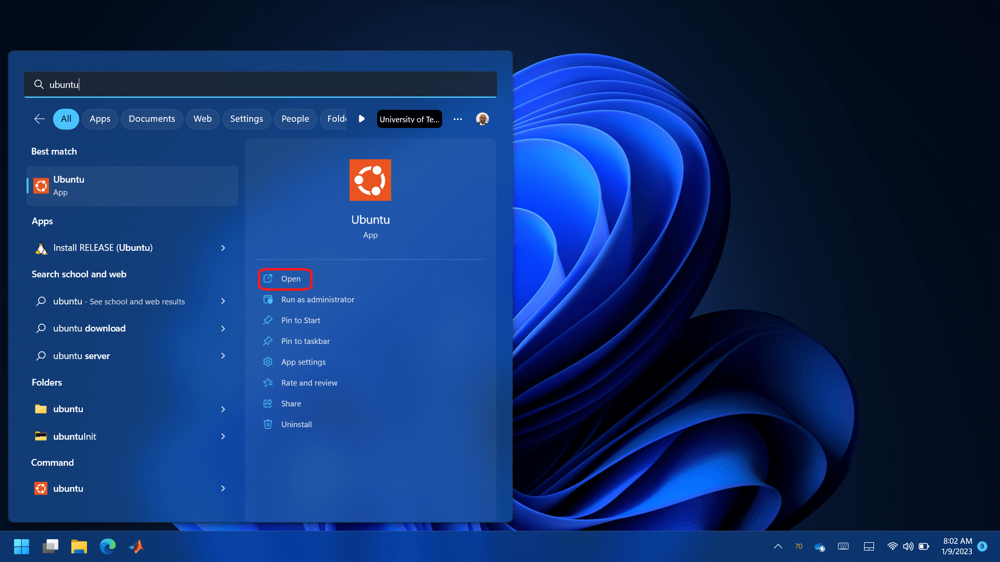
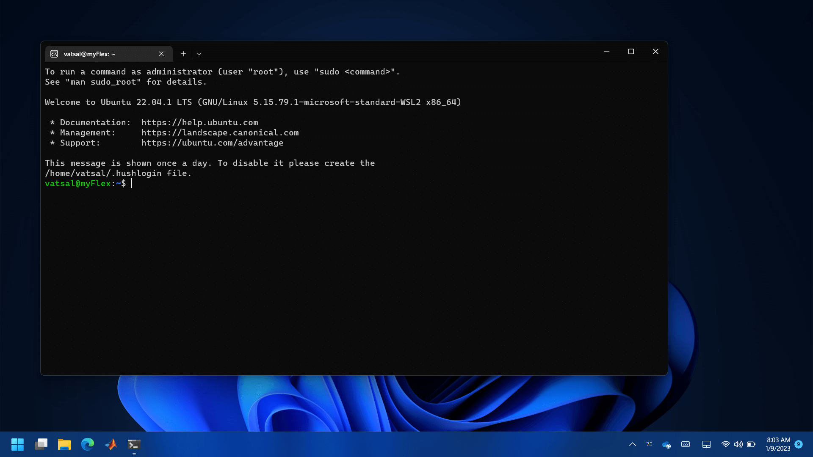
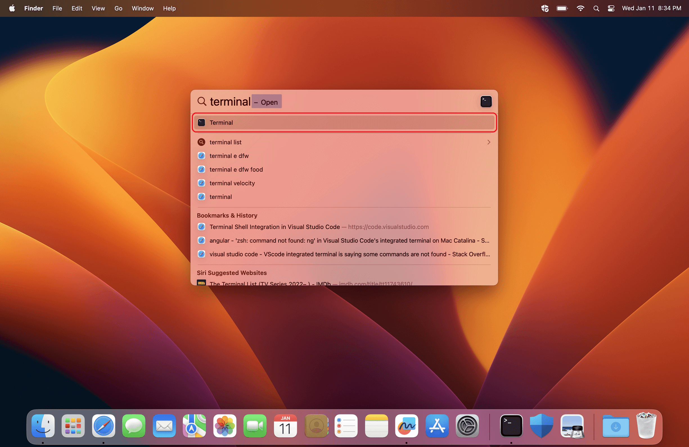
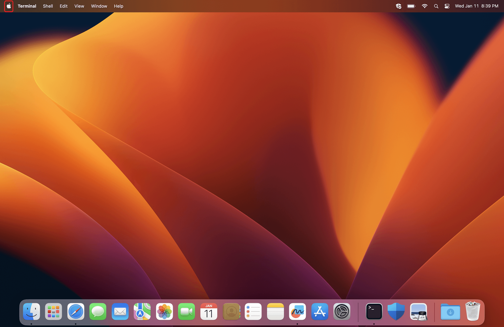
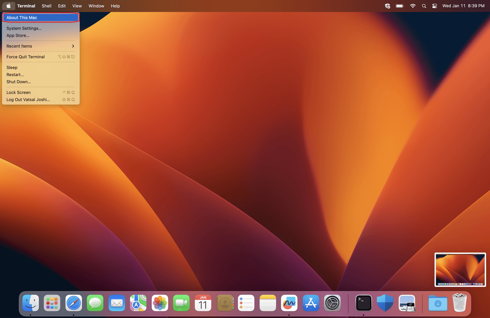
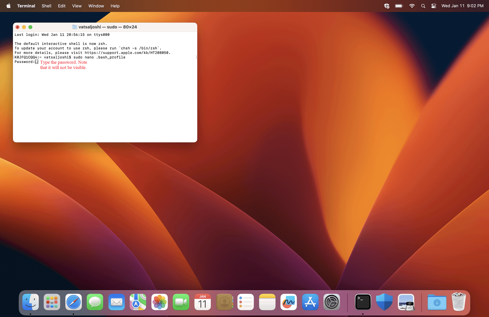
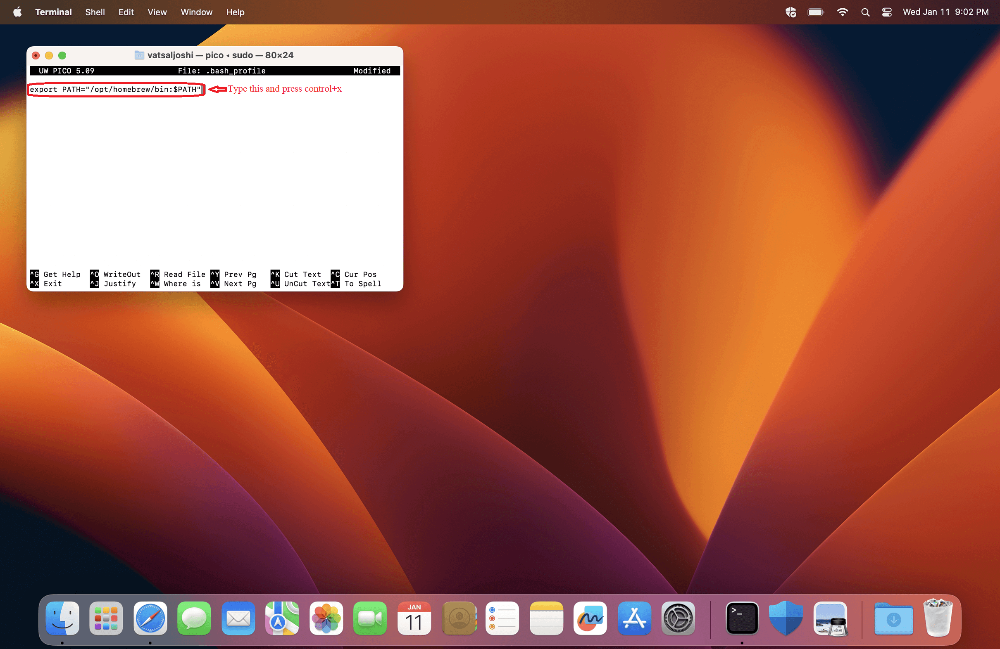
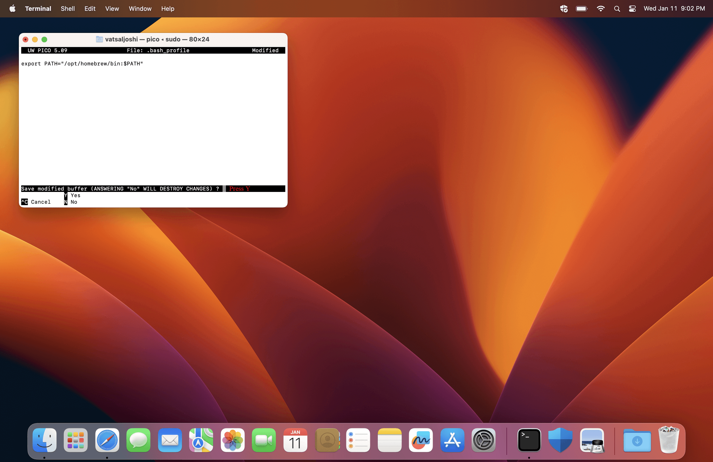

Arm Toolchain
Contents
Arm Toolchain#
A toolchain is a set of programming tools, like a compiler, linker, debugger, etc., that facilitate development of programs written for the same or different hardware. The Raspberry Pi Pico has RP2040 onboard which is a microcontroller based on Arm Cortex M0+ architecture. The detailed steps for installing GNU Embedded Toolchain for Arm in each operating system are as follows.
Windows/Linux#
Open Ubuntu terminal.




Enter following one line at a time to install . The
$sign represents the start of the line so don’t include it. You may need to enter the password.$ sudo apt update $ sudo apt upgrade $ sudo apt install cmake gcc-arm-none-eabi libnewlib-arm-none-eabi build-essential $ exit
MacOS#
Open terminal app.




Check if your MacBook has Apple chip or Intel chip.



If your MacBook has Apple chip then enter following commands in the terminal, continue to the next step otherwise.
$ /usr/sbin/softwareupdate --install-rosetta --agree-to-license
Install ‘Xcode Command Line Tools’ and ‘Homebrew’ by entering following command in the terminal. You may be prompted to provide password and press enter some point.
$ /bin/bash -c "$(curl -fsSL https://raw.githubusercontent.com/Homebrew/install/master/install.sh)"
Follow the images below to add Homebrew to the
PATHenironment.




Finally, enter following commands in the terminal app to install the ‘Embedded Toolchain for Arm’.
$ brew install cmake $ brew tap ArmMbed/homebrew-formulae $ brew install arm-none-eabi-gcc
Restart your MacBook. Note that CMake was also installed along with the Arm toolchain. CMake will take care of calling all the necessary programs, from the toolchain, to generate a binary file that will run on the microcontroller.